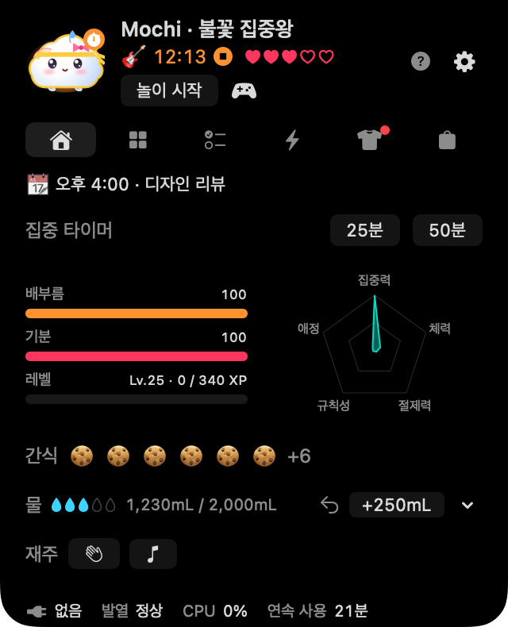
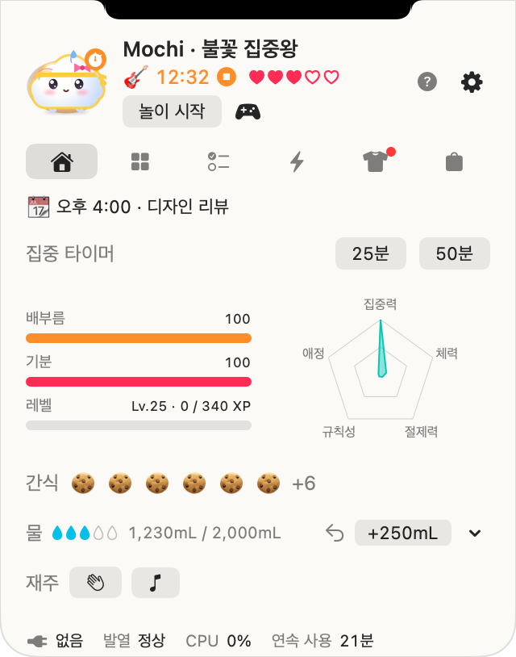
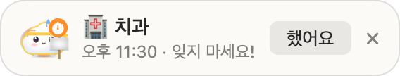
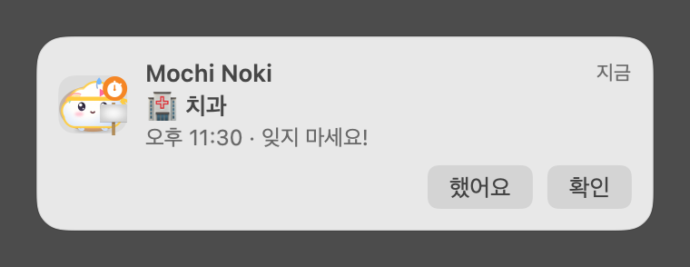

라이트·다크, 맥을 따라가요
⚙️ → 일반 → 화면 모드에서 시스템(기본), 라이트, 다크를 골라요. 시스템으로 두면 맥이 밤에 다크로 바뀔 때 노키 패널도 그 자리에서 함께 바뀌어요. 노치 패널, 말풍선, 배너, 미니게임, 설정 카드까지 모두 두 모드를 지원해요.




모든 그림은 앱의 실제 그리기 코드로 만들었어요.
⚙️ → 일반 → 화면 모드에서 시스템(기본), 라이트, 다크를 골라요. 시스템으로 두면 맥이 밤에 다크로 바뀔 때 노키 패널도 그 자리에서 함께 바뀌어요. 노치 패널, 말풍선, 배너, 미니게임, 설정 카드까지 모두 두 모드를 지원해요.




모든 그림은 앱의 실제 그리기 코드로 만들었어요.